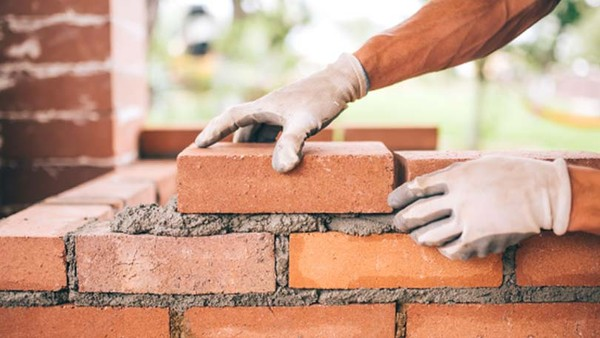
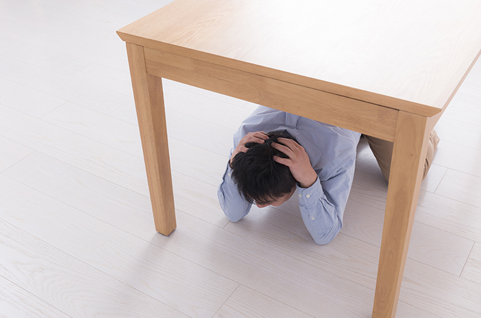

Bangunan kokoh
Pastikan bangunan rumah dan lingkungan sekitar tahan gempa.

Sebelum gempa
Gempa tidak bisa diprediksi, tetapi dampaknya bisa dikurangi. Mulai dari empat hal sederhana ini.
Pastikan bangunan rumah dan lingkungan sekitar tahan gempa.
Amankan benda yang mudah jatuh dan bisa melukai.
Latih perlindungan diri dan evakuasi di lingkungan tempat tinggal.
Perhatikan letak pintu, tangga darurat, dan tempat aman.
Sumber: BNPB, Siaga Bencana: Gempa, Mencegah Dampak; Poster edukasi PREDIKT! (Preparedness for disaster toolkit).

Saat gempa
Sumber: BNPB, Siaga Bencana: Gempa, Saat Terjadi; Poster edukasi PREDIKT! (Preparedness for disaster toolkit).

Sesudah gempa
Sumber: BNPB, Siaga Bencana: Gempa, Setelah Terjadi; Poster edukasi PREDIKT! (Preparedness for disaster toolkit).
Informasi resmi
Andalkan sumber resmi, bukan kabar berantai.
Kontak darurat
Simpan nomor darurat di ponsel dan tuliskan di tempat yang mudah terlihat di rumah.
Sumber: BMKG, Edukasi Gempa Bumi dan Tsunami; Kompas TV Info Publik; Bisnis.com.